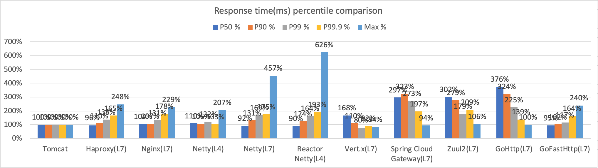

用于实现API网关的技术有很多，大致分为这么几类：
- 通用反向代理：Nginx、Haproxy、……
- 网络编程框架：Netty、Servlet、Spring Webflux、Go net/http包、Go fasthttp包、……
- API网关框架：Spring Cloud Gateway、Zuul、Zuul2、……
API网关最基本的功能就是反向代理，所以在对API网关做技术选型的时候需要着重考察其性能表现，本文对Nginx、Haproxy、Netty、Spring Cloud Gateway、Zuul2做了性能测试，测试代码可以在github获得。
测试方法
- 准备了三台2CPU 4G内存的服务器，分别运行Tomcat、API Gateway、Gatling（压测工具）
- 先对Tomcat做压测，取Tomcat充分预热后的压测结果作为基准。压的是Tomcat自带的example：
/examples/jsp/jsp2/simpletag/book.jsp - 对Haproxy（7层）、Nginx（7层）、Netty（4层）、Netty（7层）、Reactor Netty（4层）、Vert.x（7层）、Spring Cloud Gateway（7层）、Zuul2（7层）、Go net/http（7层）、Go fasthttp（7层）做了测试
- 在对Netty、Zuul2、Spring Cloud Gateway做压测前先压了几轮做预热。
- 被测的API网关都没有添加额外业务，只做反向代理
吞吐量
下图是吞吐量的情况，可以看到Haproxy（7层）、Nginx（7层）、Netty（4层）、Netty（7层）、Reactor Netty（4层）、Go fasthttp（7层），只比直压Tomcat低一点点，而Spring Cloud Gateway（7层）、Zuul2（7层）、Go net/http（7层）则要低得多。

下面这张图可以更明显的看到吞吐量比较，Tomcat为100%因为它是基准值，Haproxy（7层）、Nginx（7层）、Netty（4层）、Netty（7层）、Reactor Netty（4层）、Go fasthttp（7层）的只比基准值低10左右%，而Spring Cloud Gateway（7层）、Zuul2（7层）、Go net/http（7层）则只是基准值的30%多一点（难兄难弟）。

平均响应时间
下图可以看到Haproxy（7层）、Nginx（7层）、Netty（4层）、Netty（7层）、Reactor Netty（4层）、Go fasthttp（7层）的平均响应时间与Tomcat差不多。但是Spring Cloud Gateway（7层）、Zuul2（7层）、Go net/http（7层）则是Tomcat的3倍左右，不出所料。
下图同样是以Tomcat作为基准值的比较：

响应时间分布
光看平均响应时间是不够的，我们还得看P50、P90、P99、P99.9以及Max响应时间（可惜Gatling只能设置4个百分位，否则我还想看看P99.99的响应时间）。
为何要观察P99.9的响应时间？光看P90不够吗？理由有两个：
1）观察P99、P99.9、P99.99的响应时间可以观察系统的在高压情况下的稳定性，如果这三个时间的增长比较平滑那么说明该系统在高压力情况下比较稳定，如果这个曲线非常陡峭则说明不稳定。
2）观察P99、P99.9、P99.99的响应时间能够帮助你估算用户体验。假设你有一个页面会发出5次请求，那么这5次请求均落在P90以内概率是多少？90%^5=59%，至少会经历一次 > P90响应时间的概率是 100%-59%=41%，如果你的P90=10s，那么就意味着用户有41%的概率会在加载页面的时候超过10s，是不是很惊人？如果你的P99=10s，那么用户只有5%的概率会在访问页面的时候超过10s。如果P99.9=10s，则有0.4%的概率。
关于如何正确压测系统可以看 “How NOT to Measure Latency” by Gil Tene

下面同样是把结果与Tomcat基准值做对比：
可以看到几个很有趣的现象：
- Haproxy（7层）、Nginx（7层）、Netty（7层）、Reactor Netty（4层）、Go fasthttp（7层）的P50、P90、P99、P99.9、Max都是逐渐递增的。
- Netty（4层）的P50、P90、P99、P99.9是很平坦的，Max则为基准值的207%。
- Spring Cloud Gateway（7层）、Zuul2（7层）、Go net/http（7层）则是相反的，它们的平面呈现下降趋势。Spring Cloud Gateway的Max甚至还比基准值低了一点点（94%），我相信这只是一个随机出现的数字，不要太在意。
结论
Haproxy（7层）、Nginx（7层）、Netty（4层）、Netty（7层）、Reactor Netty（4层）、Go fasthttp（7层）的表现均很不错，其对于吞吐量和响应时间的性能损耗很低，可以忽略不计。
但是目前最为火热的Spring Cloud Gateway和Zuul2则表现得比较糟糕，因我没有写额外的业务逻辑这，可以推测这和它们的内置逻辑有关，那么大致有这么几种可能：
- 内置逻辑存在问题，把Netty的优化抵消掉了（两者都基于Netty）
- 内置逻辑存在阻塞（可能性不大）
另外，Vert.x则显得很独特，它的各种指标位于前面两派的中间。
不过话说回来考虑选用那种作为API网关（的基础技术）不光要看性能，还要看：
- 是否易于扩展自己的业务逻辑
- API使用的便利性
- 代码的可维护性
- 文档是否齐全
- …
性能只是我们手里的一个筹码，当我们知道这个东西性能到底几何后，才可以与上面的这些做交换（trade-off）。比如Nginx和Haproxy的可扩展性很差，那么我们可以使用Netty。如果你觉得Netty的API太底层了太难用了，那么可以考虑Spring Cloud Gateway或Zuul2。前提是你知道你会失去多少性能。
评论